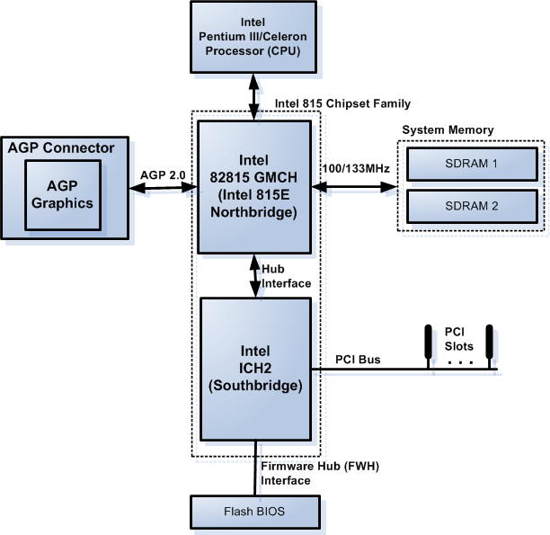
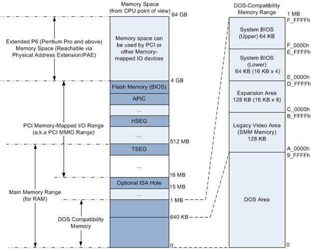
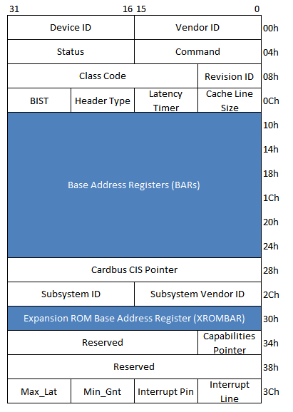
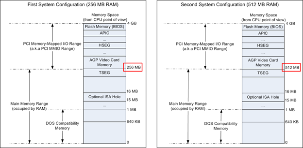
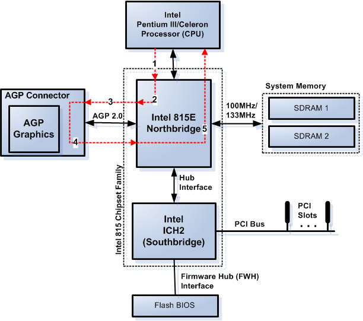
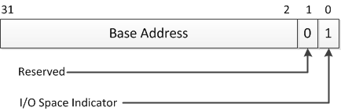
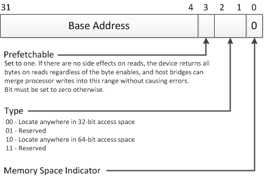
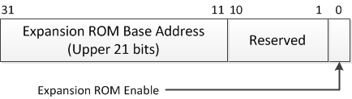
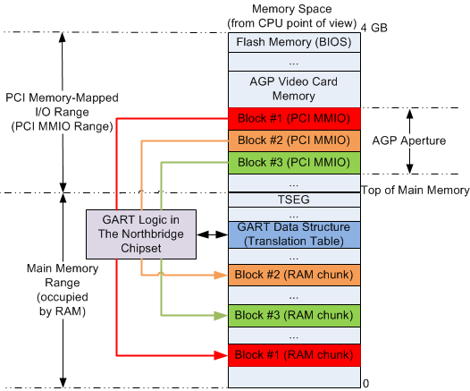

<!DOCTYPE html>
<!--[if IE 8]> <html lang="en" class="ie8 no-js"> <![endif]-->
<!--[if IE 9]> <html lang="en" class="ie9 no-js"> <![endif]-->
<!--[if !IE]><!-->
<html lang="en">
<!--<![endif]-->
<head><meta name="generator" content="Hexo 3.9.0">
  <meta charset="utf-8">
  
  <title>x86/x64架构中的系统地址映射的初始化，第1部分：基于PCI的系统 | Chisel 中文社区</title>

  <meta content="width=device-width, initial-scale=1.0" name="viewport">
  <meta http-equiv="X-UA-Compatible" content="IE=edge,chrome=1">

  <meta name="description" content="目录 惯例 系统启动过程一览 基于PCI的系统地址映射解析 基于Intel 815E-ICH2芯片组的系统 PCI配置寄存器 英特尔815E-ICH2平台上的例子 系统管理模式（SMM，System Management Mode）的内存映射   PCI总线基地址寄存器初始化 PCI BAR的格式 关于调整PCI BAR的实现细节   AGP图形地址重映射/重定位表（GART） 劫持BIOS中断1">
<meta name="keywords" content="PCI">
<meta property="og:type" content="article">
<meta property="og:title" content="x86&#x2F;x64架构中的系统地址映射的初始化，第1部分：基于PCI的系统">
<meta property="og:url" content="https://www.chiselchina.com/2019/07/03/基于PCI的系统地址映射/index.html">
<meta property="og:site_name" content="Chisel 中文社区">
<meta property="og:description" content="目录 惯例 系统启动过程一览 基于PCI的系统地址映射解析 基于Intel 815E-ICH2芯片组的系统 PCI配置寄存器 英特尔815E-ICH2平台上的例子 系统管理模式（SMM，System Management Mode）的内存映射   PCI总线基地址寄存器初始化 PCI BAR的格式 关于调整PCI BAR的实现细节   AGP图形地址重映射/重定位表（GART） 劫持BIOS中断1">
<meta property="og:locale" content="default">
<meta property="og:image" content="https://www.chiselchina.com/2019/07/03/基于PCI的系统地址映射/fig1.png">
<meta property="og:image" content="https://www.chiselchina.com/2019/07/03/基于PCI的系统地址映射/fig2.png">
<meta property="og:image" content="https://www.chiselchina.com/2019/07/03/基于PCI的系统地址映射/fig3.png">
<meta property="og:image" content="https://www.chiselchina.com/2019/07/03/基于PCI的系统地址映射/fig4.png">
<meta property="og:image" content="https://www.chiselchina.com/2019/07/03/基于PCI的系统地址映射/fig5.png">
<meta property="og:image" content="https://www.chiselchina.com/2019/07/03/基于PCI的系统地址映射/fig6.png">
<meta property="og:image" content="https://www.chiselchina.com/2019/07/03/基于PCI的系统地址映射/fig7.png">
<meta property="og:image" content="https://www.chiselchina.com/2019/07/03/基于PCI的系统地址映射/fig8.png">
<meta property="og:image" content="https://www.chiselchina.com/2019/07/03/基于PCI的系统地址映射/fig9.png">
<meta property="og:updated_time" content="2019-10-24T15:02:52.692Z">
<meta name="twitter:card" content="summary">
<meta name="twitter:title" content="x86&#x2F;x64架构中的系统地址映射的初始化，第1部分：基于PCI的系统">
<meta name="twitter:description" content="目录 惯例 系统启动过程一览 基于PCI的系统地址映射解析 基于Intel 815E-ICH2芯片组的系统 PCI配置寄存器 英特尔815E-ICH2平台上的例子 系统管理模式（SMM，System Management Mode）的内存映射   PCI总线基地址寄存器初始化 PCI BAR的格式 关于调整PCI BAR的实现细节   AGP图形地址重映射/重定位表（GART） 劫持BIOS中断1">
<meta name="twitter:image" content="https://www.chiselchina.com/2019/07/03/基于PCI的系统地址映射/fig1.png">
  
    <link rel="alternative" href="/atom.xml" title="Chisel 中文社区" type="application/atom+xml">
  
  
    <link rel="icon" href="/favicon.ico">
  
    
  <meta content="{{ title }}" name="description">
  <meta content="{{ title }}" name="keywords">
  <meta content="{{ title }}" name="author">

  <link href="http://fonts.googleapis.com/css?family=Open+Sans:300,400,600,700|PT+Sans+Narrow|Source+Sans+Pro:200,300,400,600,700,900&amp;subset=all" rel="stylesheet" type="text/css">

  <!-- Global styles START -->   
  <link rel="stylesheet" href="/metronic/assets/plugins/font-awesome/css/font-awesome.min.css">
  <link rel="stylesheet" href="/metronic/assets/plugins/bootstrap/css/bootstrap.min.css">
  <!-- Global styles END --> 
   
  <!-- Page level plugin styles START -->
  <link rel="stylesheet" href="/metronic/assets/pages/css/animate.css">
  <link rel="stylesheet" href="/metronic/assets/plugins/owl.carousel/assets/owl.carousel.css">
  <!-- Page level plugin styles END -->

  <!-- Theme styles START -->
  <link rel="stylesheet" href="/metronic/assets/pages/css/components.css">
  <link rel="stylesheet" href="/metronic/assets/pages/css/slider.css">
  <link rel="stylesheet" href="/metronic/assets/corporate/css/style.css">
  <link rel="stylesheet" href="/metronic/assets/pages/css/portfolio.css">
  <link rel="stylesheet" href="/metronic/assets/corporate/css/style-responsive.css">
  <link rel="stylesheet" href="/metronic/assets/corporate/css/themes/red.css">
  <link rel="stylesheet" href="/css/theme-styles.css">
  <!-- Theme styles END -->
</head>
</html>
<body class="corporate">
  <!-- BEGIN HEADER -->
<div class="header">
  <div class="container">
    <!--<a class="site-logo" href="/" id="logo">Chisel 中文社区</a>-->

    <a class="site-logo" href="/">
      
    </a>

    <a href="javascript:void(0);" class="mobi-toggler"><i class="fa fa-bars"></i></a>

    <!-- BEGIN NAVIGATION -->
    <div class="header-navigation pull-right font-transform-inherit">
      <ul>
	
	<li class="">
	  <a  href="/">主页</a>
	</li>
	
	<li class="">
	  <a  href="/categories/项目/">项目</a>
	</li>
	
	<li class="">
	  <a  href="/archives/">文章</a>
	</li>
	
	<li class="">
	  <a  href="https://www.chiselchina.com/forum/category/3/%E5%8D%9A%E5%AE%A2">博客</a>
	</li>
	
	<li class="">
	  <a  href="https://www.chiselchina.com/forum">技术交流</a>
	</li>
	
	<li class="">
	  <a  href="/about/">关于我们</a>
	</li>
	
	<!-- BEGIN TOP SEARCH -->
	<li class="menu-search">
	  <span class="sep"></span>
	  <i class="fa fa-search search-btn"></i>
	  <div class="search-box">
	    <form action="#">
	      <div class="input-group">
		<input type="text" placeholder="Search" class="form-control st-default-search-input">
		<span class="input-group-btn">
		  <button class="btn btn-primary" type="submit">Search</button>
		</span>
	      </div>
	    </form>
	  </div> 
	</li>
	<!-- END TOP SEARCH -->
      </ul>
    </div>
    <!-- END NAVIGATION -->
  </div>
</div>
<!-- Header END -->

  <div class="container">
  <ul class="breadcrumb">
    <li><a href="/">主页</a></li>
    <li><a href="/archives">所有文章</a></li>
    <li class="active">文章</li>
  </ul>
  <section id="main">
    
    <h3 itemprop="name">
      <a class="article-title" href="/2019/07/03/基于PCI的系统地址映射/">x86/x64架构中的系统地址映射的初始化，第1部分：基于PCI的系统</a>
    </h3>


    <div class="row">
<div class="col-md-9 col-sm-9 blog-posts">
<article id="post-基于PCI的系统地址映射" class="article article-type-post blog-item" itemscope itemprop="blogPost">
  <div class="article-meta">
  </div>
  <div class="article-inner">
    
    
    <header class="article-header">
      <ul class="blog-info">
	<li><i class="fa fa-user"></i> chiselchina</li>
	<li><i class="fa fa-calendar"></i>
	  <time datetime="2019-07-04T05:02:20.000Z" itemprop="datePublished">2019/07/03</time>

	</li>
	<li class="hidden-xs"><i class="fa fa-comments"></i>
	  <a href="https://www.chiselchina.com/2019/07/03/基于PCI的系统地址映射/#disqus_thread" class="article-comment-link">评论</a>
	</li>
	<li class="hidden-xs"><i class="fa fa-tags"></i> 
	  
  
    <a href="/tags/PCI/" title="PCI">PCI</a>
  


	</li>
      </ul>
      
  <div class="article-category">
    
      类别: 
    
    <a class="article-category-link" href="/categories/相关技术/">相关技术</a>

  </div>
  <br>


    </header>
    
    <div class="article-entry" itemprop="articleBody">
      
        <h1 id="目录"><a href="#目录" class="headerlink" title="目录"></a>目录</h1><ul>
<li><a href="#惯例">惯例</a></li>
<li><a href="#系统启动过程一览">系统启动过程一览</a></li>
<li><a href="#基于pci的系统地址映射解析">基于PCI的系统地址映射解析</a><ul>
<li><a href="#基于intel-815e-ich2芯片组的系统">基于Intel 815E-ICH2芯片组的系统</a></li>
<li><a href="#pci配置寄存器">PCI配置寄存器</a></li>
<li><a href="#英特尔815e-ich2平台上的例子">英特尔815E-ICH2平台上的例子</a></li>
<li><a href="#系统管理模式smmsystem-management-mode的内存映射">系统管理模式（SMM，System Management Mode）的内存映射</a></li>
</ul>
</li>
<li><a href="#pci总线基地址寄存器初始化">PCI总线基地址寄存器初始化</a><ul>
<li><a href="#pci-bar的格式">PCI BAR的格式</a></li>
<li><a href="#关于调整pci-bar的实现细节">关于调整PCI BAR的实现细节</a></li>
</ul>
</li>
<li><a href="#agp图形地址重映射重定位表gart">AGP图形地址重映射/重定位表（GART）</a></li>
<li><a href="#劫持bios中断15h-ax--e820h接口">劫持BIOS中断15h AX = E820h接口</a></li>
<li><a href="#uefi-getmemorymap-接口">UEFI： GetMemoryMap() 接口</a></li>
<li><a href="#结束语">结束语</a></li>
</ul>
<p>本文是关于PCI扩展ROM地址映射的说明，初级程序员有时会对设备内存（例如PCI设备内存）到系统地址的映射感到困惑。本文介绍了系统地址映射的初始化过程，重点介绍了控制该映射的PCI芯片寄存器的初始化。只有当PCI设备包含内存时，才需要PCI设备内存地址映射，例如显卡，带有板载缓冲区的网卡，或支持PCI扩展ROM的网卡等。</p>
<hr>
<p>注： PCI Expansion ROM或者PCI Option ROM。 它是用于设备初始化和系统boot的代码。有的PCI Option ROM被存放在板卡上，而有的则保存在BIOS的binary里面。扩展卡如硬盘控制器、显卡、网卡可能包含BIOS扩展程序（即Option ROM），为BIOS提供附加的功能。在BIOS引导操作系统前，Option ROM被BIOS运行。部分内置于主板的设备，其Option ROM可作为主板BIOS的一部分。Option ROM通过BIOS引导规范扩展BIOS的引导功能。</p>
<hr>
<p>由于要向后兼容，x86/x64的系统地址映射很复杂，这必须反应在x86/x64架构的总线协议中。总线协议规定了连接在总线上的设备内存到系统地址的映射。因此，您必须了解特定总线协议中的地址映射机制，从而了解怎样初始化一个系统地址映射。本文重点介绍基于PCI总线协议的系统。 和今天的标准比起来，PCI总线协议是过时的。但是，从底层理解它在软件/固件方面如何工作非常重要，因为在不了解PCI总线协议的情况下，不可能理解后面的总线协议PCI Express（PCIe）。 PCIe实际上是当今每个x86 / x64系统中的主要总线协议。本文的第2部分将重点介绍基于PCIe的系统。</p>
<h1 id="惯例"><a href="#惯例" class="headerlink" title="惯例"></a>惯例</h1><p>本文中“内存”一词有几种不同的用法。对于那些刚接触该主题的人来说，这可能会令人困惑。因此，本文使用以下约定：</p>
<ul>
<li>“主存”（main memory）一词指的是安装在主板上的随机存取存储器（RAM）。</li>
<li>“内存控制器”一词指的是控制RAM与访问RAM的芯片组，它可以是单独的芯片组，也可以是CPU的一部分。 </li>
<li>闪存（Flash memory）既可以是指主板上BIOS/UEFI的存储芯片，也可以指PCI扩展ROM中的存储芯片。 </li>
<li>“内存范围”（memory range）或“内存地址范围”（memory address range），表示某个设备所占用的，基地址（起始地址）到结束地址（基址+内存大小）的CPU内存地址空间。</li>
<li>“存储空间”（memory space）一词是指CPU可访问的一组内存地址，即可从CPU寻址的内存。“内存”在这里指的可能是RAM，ROM。</li>
<li>“PCI扩展ROM”一词主要是指PCI设备上的ROM芯片，除非上下文中包含其他说明。</li>
</ul>
<h1 id="系统启动过程一览"><a href="#系统启动过程一览" class="headerlink" title="系统启动过程一览"></a>系统启动过程一览</h1><p>本节详细介绍了系统的启动过程，以便了解系统地址映射以及本文后面介绍的其他与总线协议相关的事项。在讨论系统地址映射和总线协议相关的话题之前，您首先需要清楚地了解系统的启动过程。</p>
<p>x86 / x64中的启动过程从平台固件（BIOS / UEFI）开始。平台固件在“启动加载程序”（boot loader）加载并执行OS之前被执行。平台固件的功能可归纳如下：</p>
<ol>
<li>从CPU（处理器）的复位向量开始执行。在所有平台中，启动处理器（BSP，可以是多核处理器中的其中一个核）通过读取位于称为复位向量的地址中的指令来开始执行。在x86/x64中，此地址为4GB减去16字节（FFFF_FFF0h），该地址始终位于主板上的BIOS/UEFI闪存中。</li>
</ol>
<ol start="2">
<li>CPU运行模式初始化。在此阶段中，平台固件将CPU切换到平台固件的CPU运行模式;它可以是实模式（real mode），“voodoo”模式或保护模式（flat protected mode），具体取决于平台固件。 X86/x64 CPU都从某种实模式开始执行，即从物理地址FFFF_FFF0h处开始实模式运行。因此，如果平台固件的CPU运行模式为保护模式，则需要将CPU切换到该模式。如今的平台固件不像过去那样广泛使用“voodoo”模式。事实上，目前大多数平台固件已经完全放弃了它的使用。例如，UEFI的实现使用保护模式。</li>
</ol>
<ol start="3">
<li>准备内存初始化。在此阶段，平台固件代码通常执行三个步骤：</li>
</ol>
<ul>
<li><p>CPU微码更新。在此步骤中，平台固件将CPU微码更新加载到CPU。</p>
</li>
<li><p>CPU特定的初始化。在（至少是）Pentium III和AMD Athlon时代的x86 / x64 CPU中，此阶段的代码通常会设置一个被称为CAR（cache-as-RAM）的临时堆栈，即CPU cache当作临时的（可写）RAM来使用，因为在这个执行点RAM尚未初始化，所以没有可使用的可写内存。而 平台固件中复杂的代码需要使用堆栈。在老的BIOS中，有一些用于处理返回地址的汇编程序宏技巧，因为在默认情况下，x86/x64中函数调用的返回地址存储在 “只读 “堆栈中，但是这时候还不能使用可写的内存变量。然而，现在已经不再需要这些老技巧了，因为所有目前所有的CPU都支持CAR。如果您想了解有关CAR的更多信息，可以阅读AMD K10系列的BIOS和内核开发人员指南（BKDG）<a href="http://support.amd.com/us/Processor_TechDocs/31116.pdf" target="_blank" rel="noopener">http://support.amd.com/us/Processor_TechDocs/31116.pdf</a> 。该文档的2.3.3节解释了如何在启动时将CPU L2 cache用作通用存储。 CAR在这里非常必要，因为主存（RAM）的初始化是一项复杂的工作，并且需要使用非常复杂的代码。 CAR的存在对此非常有帮助。除了CAR的设置外，某些CPU还需要初始化一些机器专用寄存器（machine-specific registers ，MSR），这些初始化通常也在此步骤中执行。</p>
</li>
<li><p>芯片组初始化。在此步骤中，芯片组寄存器会被初始化，特别是芯片组的基地址寄存器（base address register ，BAR）。我们稍后会深入了解BAR。目前，您只需要知道BAR是用来控制芯片的寄存器和内存（如果设备有自己的内存）是怎样映射到系统地址的就足够了。在某些芯片组中，有一个看门狗定时器必须在内存初始化之前禁用，因为它可能会随机重置系统。在这种情况下，此步骤中就会禁用看门狗定时器。</p>
</li>
</ul>
<ol start="4">
<li>主存（RAM）初始化。这一步骤初始化内存控制器。过去，内存控制器是芯片组的一部分，今天已经不是这样了。现在，内存控制器已经集成到CPU中。内存控制器初始化和RAM初始化一起作为补充代码发生，因为平台固件代码必须找出内存控制器和系统上安装的RAM模块支持的正确参数，然后将两个组件正确地初始化。</li>
</ol>
<ol start="5">
<li>后期内存初始化。在此步骤之前，平台固件代码是直接从主板上的闪存ROM执行的 - 如果启用了CAR，则CPU cache充当堆栈。与在RAM中“普通”的执行方式相比，这非常缓慢。特别是读取CPU指令的时候，因为与RAM相比，闪存ROM非常慢。因此，平台固件二进制文件通常在此步骤中将自身复制到RAM并在那里继续执行。在上一步中，主存RAM已经被初始化。但是，在主存（RAM）可用于执行平台固件代码之前，还需要几个步骤：</li>
</ol>
<ul>
<li><p>内存测试。这是为了确保RAM没有问题而进行的测试，因为RAM的某些部分有可能已损坏。如何进行测试的细节取决于系统启动时间的要求。如果启动时间要求非常快，在许多情况下，不可能测试RAM的所有部分，只能通过某些统计方法来测试其中一部分，从统计学上确保测试覆盖尽可能多的部分。</p>
</li>
<li><p>将固件“阴影（shadow）”映射到RAM。在这种情况下，“阴影（shadow）”意味着将RAM从闪存ROM复制到低于1MB的RAM地址范围内-1MB是因为DOS时代20位地址的限制。但是，复制并不是一个简单的复制，因为代码驻留在RAM中的地址范围与先前在闪存ROM中的地址范围相同 - 这就是为什么它被称为“阴影”。平台固件代码中的一些“bit twiddling”的工作必须在芯片组上完成，用于控制RAM和闪存ROM的地址范围映射。 “bit twiddling” 的详细信息超出了本文的范围。您可以在相应的芯片组数据表中找到更详细的信息。</p>
</li>
</ul>
<ul>
<li>将访问内存的transaction重定向到正确的地方。这是上面“阴影”步骤的延续。细节取决于平台（CPU和芯片组）以及运行时设置，即是否在运行时（操作系统运行时）“阴影”平台固件。</li>
</ul>
<ul>
<li>设置堆栈。此步骤在RAM中设置堆栈以用于进一步的平台固件代码执行。在先前的步骤中，假设堆栈存在于CAR中。在此步骤中，堆栈从CAR切换到RAM，因为RAM此时已准备好。这很重要，因为与RAM相比，CAR中的堆栈空间非常有限。</li>
</ul>
<ul>
<li>将平台固件的执行转移到RAM。即平台固件代码“跳转”到在步骤B中“阴影”的RAM中执行。</li>
</ul>
<ol start="6">
<li>其他模块的启用。该步骤取决于特定的系统配置，即主板和支持芯片。通常，它包含时钟发生器芯片的初始化，以预期的速度运行平台。在某些平台上，此步骤还包括通用I/O（GPIO）寄存器的初始化。</li>
</ol>
<ol start="7">
<li>中断启用。前面的步骤假定尚未启用中断，因为所有中断硬件都尚未配置好。在此步骤中，初始化中断控制器和相关的中断处理程序。 x86/x64中可能有几种中断控制器硬件：8259可编程中断控制器（PIC），当今大多数CPU中存在的本地高级可编程中断控制器（LAPIC），以及出现在大多数芯片组中的I/O高级可编程中断控制器（IOxAPIC）。当中断处理所需的硬件和软件就绪后，中断就被启用了。</li>
</ol>
<ol start="8">
<li><p>定时器初始化。在此步骤中启用硬件计时器。当达到某个间隔时，定时器会产生定时器中断。操作系统和之上的一些应用程序会使用定时器工作。还有一些可能的硬件（或组合）可用作x86/x64平台中的定时器：位于芯片组中的8254可编程中断定时器（PIT）；高精度事件定时器（HPET）也驻留在芯片组中 - 该定时器不需要初始化，仅由OS使用；实时时钟（RTC）也驻留在芯片组中；以及存在于CPU中的本地APIC（LAPIC）定时器。</p>
</li>
<li><p>内存cache控件初始化。 X86/x64 CPU包含内存类型范围寄存器（MTRR），用于控制CPU cache的所有可寻址的内存范围。能否cache取决于相应内存范围中存在的硬件的类型，并且必须与之对应地初始化。例如，必须将诸如PCI总线的I/O设备占用的内存范围初始化为不能cache的地址范围 – 这里的内存范围指的是从CPU的角度出发来看的地址范围。</p>
</li>
<li><p>应用处理器（Application processor）初始化。非启动处理器核（BSP - bootstrap processor）在某些文档中也被称为应用处理器（AP）；我们在这里使用相同的名称。在多核x86 / x64 CPU中，只有启动处理器核BSP在复位时处于活动状态。因此，必须在OS启动加载程序（boot-loader）之前初始化其他AP核。AP初始化中最重要的事情之一就是MTRR。 MTRR必须在所有CPU核中保持一致，否则内存读写可能会出现异常并导致系统宕机。</p>
</li>
</ol>
<ol start="11">
<li><p>“简单” I/O设备初始化。在这里“简单”IO设备是诸如超级IO（super IO ，SIO），嵌入式控制器等硬件。这取决于系统配置。 SIO通常控制传统IO，例如PS / 2和串行接口等。嵌入式控制器主要用于笔记本电脑上，控制笔记本电脑上的按键，主板到电池的接口等。</p>
</li>
<li><p>PCI设备发现和初始化。在该步骤中，检测并初始化PCI设备 – 包括扩展PCIe设备以及连接到PCI兼容总线的其他设备。在该步骤中检测到的设备可以是系统中芯片组和/或其他PCI设备的一部分，也可以是焊接在主板上的设备或者在PCI / PCIe扩展槽中的设备。在此步骤中，多种资源会被分配给设备：IO空间分配，内存映射IO（MMIO）空间分配，IRQ分配（对于需要IRQ的设备）以及扩展ROM的检测和执行。进行内存或IO地址空间分配是通过使用BAR（base address register）实现的，我们马上将会详细介绍PCI总线基地址寄存器BAR的初始化。 USB设备的初始化也在此步骤中进行，因为USB是PCI总线的兼容协议。其他非传统设备也在此步骤中初始化，例如SATA，SPI等。</p>
</li>
<li><p>OS启动加载程序boot-loader执行。这里平台固件将执行权交给OS启动加载程序，例如Linux中的GRUB或LILO，或者Windows的加载程序。</p>
</li>
</ol>
<p>现在，您应该很清楚平台固件所执行的启动过程了。特别是PCI设备相关的系统地址映射，即步骤3c和步骤12。所有这些步骤都涉及到PCI芯片中的基地址寄存器BAR或芯片组的一些部分。</p>
<h1 id="基于PCI的系统地址映射解析"><a href="#基于PCI的系统地址映射解析" class="headerlink" title="基于PCI的系统地址映射解析"></a>基于PCI的系统地址映射解析</h1><p>在更详细地讲解系统地址映射初始化之前，我们先来解析一个典型的x86 / x64中系统地址映射的实现。以英特尔815E芯片组作为例子。您可以在 <a href="http://download.intel.com/design/chipsets/datashts/29068801.pdf" target="_blank" rel="noopener">http://download.intel.com/design/chipsets/datashts/29068801.pdf</a> 下载芯片组的数据表。英特尔815E只是其中的一半，因为它是芯片组的 “北桥” 部分。芯片组的 “南桥” 部分是Intel ICH2。您可以在 <a href="http://www.intel.com/content/www/us/en/chipsets/82801ba-io-controller-hub-2-82801bam-io-controller-hub-2-mobile-datasheet.html" target="_blank" rel="noopener">http://www.intel.com/content/www/us/en/chipsets/82801ba-io-controller-hub-2-82801bam-io-controller-hub-2-mobile-datasheet.html</a> 下载ICH2的数据表。北桥是靠近CPU并直接连接到CPU的芯片组，而南桥是远离CPU并通过北桥连接到CPU的。在当今的CPU中，北桥通常集成在CPU中。</p>
<h2 id="基于Intel-815E-ICH2芯片组的系统"><a href="#基于Intel-815E-ICH2芯片组的系统" class="headerlink" title="基于Intel 815E-ICH2芯片组的系统"></a>基于Intel 815E-ICH2芯片组的系统</h2><p>图1显示了使用Intel 815E-ICH2芯片组组成的系统的“简化”框图。图1没有显示从芯片组到系统中其他组件的连接，而只显示了与系统中的地址映射有关的部分。</p>
<p></p>
<p>英特尔815E-ICH2芯片组不是“纯”PCI芯片组，因为北桥和南桥的连接并不是PCI总线，它被称为集线器接口（hub interface ，HI），如图1所示。但是，从逻辑角度来看，HI总线本质上是一种传输速度更快的PCI总线。这里我们的重点不在于传输速度或与数据传输相关的技术，而在于地址映射。由于HI不会改变与地址映射相关的任何内容，因此我们可以简单地忽略HI总线细节并将其视为与PCI总线相同。<br>以目前的标准来看，</p>
<p>英特尔815E芯片组是古老的，但对于那些刚接触PCI芯片组底层细节的人来说，这是非常有趣的案例研究，因为它非常接近于“纯的”基于PCI的系统。如图1所示，英特尔815E芯片组是使用socket 370的Intel CPU（例如英特尔的奔腾III-代号为Coppermine和赛扬CPU）的北桥芯片组之一，。</p>
<p>图1显示了CPU如何通过Intel 815E北桥（逻辑上）连接到系统的其余部分。这意味着CPU对任何外部设备的访问都必须通过北桥。从地址映射的角度来看，这意味着Intel 815E充当着一种 “地址映射路由器” 的角色，即将读取或写入到某个地址或地址范围的数据路由到正确的设备。这就是北桥实际上的运作方式，与现今系统的不同之处只是在于北桥的物理位置，现在它集成在CPU中，而不是像Intel 815E那样是主板上的独立器件。在系统启动过程中的北桥芯片“地址映射路由器” 的配置与运行时的配置不同。实际上， “地址映射路由器” 是北桥中的一系列（逻辑）PCI设备的寄存器，用于控制系统地址映射。通常，这些寄存器是北桥芯片组中的内存控制器和AGP/PCI Bridge逻辑器件的一部分。平台固件在系统启动时初始化这些与地址映射相关的寄存器，从而为运行OS作准备。</p>
<p>现在您已经知道系统地址映射在物理层面如何工作，即它是由北桥的寄存器控制的，那么现在是时候可以深入了解系统地址映射本身了。图2显示了使用Intel 815E芯片组的系统的系统地址映射。</p>
<p></p>
<p>图2显示了Intel 815E系统地址映射。您可以在中的英特尔815E芯片组数据表中的第4.1节 “系统地址映射” 找到地址映射的补充说明。无论如何，您应该知道系统地址映射是CPU “看到” 的地址空间，而不是系统中其他芯片所看到的。</p>
<p>图2显示CPU支持的内存空间实际为64GB。自Pentium Pro时代以来这种支持一直存在于英特尔CPU中，该技术被称为物理地址扩展（PAE）。尽管如此，所能使用的内存大小取决于系统中的内存控制器，在这个例子中它位于北桥（Intel 815E芯片组）中。英特尔815E芯片组仅支持512MB的主存（RAM），以及4GB内存空间。图2还显示PCI设备占用了（使用）CPU内存空间。占用CPU内存空间的设备称为内存映射I/O设备或简称MMIO设备。 MMIO术语在业界广泛使用，适用于所有其他CPU，而不仅仅是x86 / x64。</p>
<p>图2显示RAM最多占用低512MB的内存空间。但是，在16MB物理地址上方，RAM和PCI设备之间似乎可以共享空间。实际上，这里并没有共享内存，因为平台固件在初始化PCI设备时使用的是高于主存（RAM）之上的内存范围。 RAM中的可用内存范围取决于系统中安装的RAM的大小。如果安装的RAM大小为256MB，则PCI地址范围从256MB开始直到4GB；如果安装的RAM大小为384MB，则PCI地址范围从384MB开始直到4GB；等等。因此，这意味着PCI设备的内存范围是可重新定位的，即可以在CPU内存空间内重新定位，否则不可能防止内存范围使用中的冲突。这实际上是PCI总线的一个特性，使得它与所取代的ISA总线区分开来。在古老的ISA总线中，您必须正确地为ISA设备设置跳线；否则系统中将存在地址使用冲突。而在PCI总线中，这个地址映射是平台固件的工作。</p>
<p>在安装的RAM的地址范围之上，有几个特殊的地址范围会被PCI设备占用- 安装的RAM大小在英特尔的文档中被称为主存顶部（TOM ，top of main memory ），所以从现在开始我们使用相同的术语。 TOM之上有一些特殊的地址范围是硬编码的并且不能更改，因为CPU的复位向量和某些非CPU的芯片寄存器总是映射到那些特殊的内存范围，即它们都是不可重定位的。在这些 “硬编码” 的内存范围中，包括高级可编程中断控制器（APIC）使用的内存范围，以及存储BIOS / UEFI代码的闪存。 PCI设备不能使用这些硬编码的内存范围。</p>
<h2 id="PCI配置寄存器"><a href="#PCI配置寄存器" class="headerlink" title="PCI配置寄存器"></a>PCI配置寄存器</h2><p>现在，我们已经到了讨论的核心：PCI总线协议如何将PCI设备内存映射到系统地址空间上？这个映射是通过使用一组称为BAR（基址寄存器）的PCI设备寄存器来完成的。稍后我们将在“PCI总线基址寄存器初始化” 详一节中详细介绍BAR初始化。现在，我们先介绍PCI设备中BAR的实现细节。</p>
<p>BAR是所谓的PCI配置寄存器的一部分。每个PCI设备必须实现PCI规范规定的PCI配置寄存器，否则，该设备将不被视为有效的PCI设备。 PCI配置寄存器始终控制PCI设备的行为，因此，更改PCI配置寄存器中的（R/W）值也会改变系统的行为。在x86/x64架构中，PCI配置寄存器可通过两个32位的I/O端口访问： I/O端口CF8h-CFBh充当地址端口，而I/O端口CFCh-CFFh充当数据端口，用于将值读/写到PCI配置寄存器中。有关在x86中访问PCI配置寄存器的详细信息，请阅读这篇文章的这一部分：<a href="https://sites.google.com/site/pinczakko/pinczakko-s-guide-to-award-bios-reverse-engineering#PCI_BUS" target="_blank" rel="noopener">https://sites.google.com/site/pinczakko/pinczakko-s-guide-to-award-bios-reverse-engineering#PCI_BUS</a> 。该链接中的材料应该可以让您更清楚地了解x86/x64 CPU中PCI配置寄存器的访问权限。请注意，该链接中的代码必须在ring 0（内核模式）或DOS下执行（如果您使用的是16位汇编程序），否则会使操作系统报出访问权限异常。</p>
<p>现在，让我们更仔细地看一下PCI配置寄存器。 PCI配置寄存器由256字节的寄存器组成，从（字节）偏移00h到（字节）偏移FFh。 256字节的PCI配置寄存器由两部分组成：前64个字节称为PCI配置寄存器头，其余的称为设备专用PCI配置寄存器。本文仅介绍BAR，它们位于PCI配置寄存器头中。它不处理特定于设备的PCI配置寄存器，因为只有BAR才会影响PCI设备内存到系统地址的映射。</p>
<p>有两种类型的PCI配置寄存器头：类型0和类型1。 PCI到PCI桥设备必须实现PCI配置寄存器类型1；而其他PCI设备必须实现PCI配置寄存器类型0。本文仅讨论PCI配置寄存器类型0，并侧重于BAR。图3显示了PCI配置寄存器类型0的寄存器头的结构。如前所述，寄存器通过I/O端口CF8h-CFBh和CFCh-CFFh访问。</p>
<p></p>
<p>图3显示了两种类型的BAR，在蓝色背景上突出显示：BAR本身和扩展ROM基地址寄存器（XROMBAR）。 BAR跨越6个32位寄存器（24字节）的范围，从偏移10h到偏移27h 。BAR用于映射将非扩展ROM PCI设备的内存 - 通常是PCI设备上的RAM – 映射到系统地址空间，而XROMBAR专门用于PCI扩展ROM的系统地址映射。平台固件的工作是初始化BAR的值。每个BAR是一个32位寄存器，因此它们中的每一个都可以用来将PCI设备内存映射到32位系统地址中，即可以将PCI设备内存映射到4GB的内存地址空间中。</p>
<p>BAR和XROMBAR是可读写的寄存器，即BAR / XROMBAR的内容可以被修改。这是重新定位PCI设备内存映射所需的核心功能。我们将 PCI设备内存在系统地址空间中称为可重定位的，因为您可以通过更改BAR / XROMBAR的内容来更改PCI设备内存在系统中的位置，即基地址（起始地址）。它的工作原理如下：</p>
<ul>
<li>不同的系统可以具有不同的主存（RAM）大小。</li>
<li>不同的RAM大小意味着系统地址映射中预留的给PCI MMIO的区域不同。 </li>
<li>不同的PCI MMIO范围意味着PCI设备内存在CPU内存空间中占用的地址不同。这意味着您必须能够在将PCI设备放到RAM大小不同的另一台机器中，并赋予该PCI设备不同的内存基地址；在同一台机器中添加更多的内存，情况也是如此。</li>
<li>BAR和XROMBAR控制PCI设备内存占用的地址。由于它们都是可修改的，因此您可以根据需要更改PCI设备内存在CPU内存空间中所占用的地址范围。</li>
</ul>
<h2 id="英特尔815E-ICH2平台上的例子"><a href="#英特尔815E-ICH2平台上的例子" class="headerlink" title="英特尔815E-ICH2平台上的例子"></a>英特尔815E-ICH2平台上的例子</h2><p>对于初学者来说，XROMBAR和BARs的解释可能仍然有些混乱。让我们来看一些实际的例子。例如下面两种情况：</p>
<ol>
<li><p>该系统主要使用具有256 MB RAM的Intel Pentium III CPU，含有Intel 815E芯片组的主板，和具有32 MB板载内存的AGP显卡。从系统地址映射的角度来看，AGP显卡就是具有板载内存的PCI设备。从现在开始，我们将此配置称为第一个系统配置。</p>
</li>
<li><p>与第一个系统配置相同。但是，我们添加了新的256 MB RAM模块。因此，该系统现在具有512 MB RAM - 基于其数据表，这是Intel 815E芯片组支持的最大RAM。从现在开始，我们将此配置称为第二个系统配置。</p>
</li>
</ol>
<p>我们来看看上面的两种配置中的系统地址映射的情况。图4显示了第一个系统配置（256 MB RAM）的系统地址映射和第二个系统配置（512 MB RAM）的系统地址映射情况。如您所见，在第二个系统配置（512 MB RAM）中，PCI设备占用的内存范围从第一个系统配置（256 MB RAM）的3840 MB（4GB -  256 MB）缩小到3584 MB（4GB -  512 MB）。该改变还导致AGP显卡内存基地址的改变；在第一个系统配置中，基地址是256 MB，而在第二个系统配置中，基地址是512 MB。 AGP显卡内存基地址的改变是因为可以修改AGP显卡的BAR寄存器。</p>
<p></p>
<p>现在，让我们看看英特尔815E北桥如何在图4所示的第一个系统配置（256 MB RAM）中将内存访问定位到CPU内存中。让我们分解一下对显卡（AGP）内存的读取请求的各个步骤。在第一个系统配置中，平台固件初始化将256 MB到288 MB的内存范围映射为显存，因为显存大小为32 MB；而起始的256 MB被映射到主存RAM。平台固件通过配置/初始化显卡芯片的BAR，来使得它可以接受256 MB至288 MB范围内的内存访问。图5显示了在运行时（OS内部）从物理地址11C0_0000h（284MB）开始读取显存内容的步骤。</p>
<p></p>
<p>图5中所示步骤的细节如下：</p>
<ol>
<li>假设应用程序（在OS内部运行）请求显存中的纹理数据，请求最终转换为物理地址11C0_0000h（284MB），读取请求将从CPU进入北桥。 </li>
<li>北桥将读取请求转发到内存范围包含请求的地址11C0_0000h的那个设备上。北桥芯片会检查所有与地址映射有关的寄存器，从而找到与所请求地址相匹配的设备。在Intel 815E芯片组中，AGP端口上设备的地址映射由四个寄存器控制，这些寄存器位于芯片组的AGP/PCI桥部分。这四个寄存器分别是MBASE，MLIMIT，PMBASE和PMLIMIT。对从MBASE到MLIMIT，或PMBASE到PMLIMIT范围内的内存地址的任何访问都被转发到AGP。在这里，请求的地址（11C0_0000h）在PMBASE到PMLIMIT内存范围之间。请注意，这四个地址映射寄存器的初始化是平台固件的工作。 </li>
<li>因为所请求的地址（11C0_0000h）在PMBASE到PMLIMIT内存范围内，所以北桥将读取请求转发到AGP，即转发到显卡芯片。 </li>
<li>显卡芯片的BAR设置允许它响应来自北桥的请求。然后，显卡芯片读取该请求地址（11C0_0000h）处的数据，并将读取的数据返回到北桥。 </li>
<li>北桥将显卡返回的结果转发给CPU。CPU从北桥接收结果，读取请求完成。</li>
</ol>
<p>如果尚未习惯于将英特尔815E北桥芯片组看为“地址路由器”的话，上面读取显存的例子应该足够清楚了。</p>
<h2 id="系统管理模式（SMM，System-Management-Mode）的内存映射"><a href="#系统管理模式（SMM，System-Management-Mode）的内存映射" class="headerlink" title="系统管理模式（SMM，System Management Mode）的内存映射"></a>系统管理模式（SMM，System Management Mode）的内存映射</h2><p>在本节的开头，我已经讨论了PCI内存范围中的“特殊”内存范围，即包含平台固件的闪存ROM芯片和APIC所占用的内存范围。如果查看图2中的系统地址映射，您可以看到系统地址映射中还有两个内存范围神秘地显示出来。它们是HSEG和TSEG。这两个内存范围在正常运行模式下都是不可访问的，即它们不能从操作系统内部访问，甚至是DOS。它们仅在CPU处于系统管理模式（SMM）时可以访问。因此，它只能直接由BIOS中的SMM代码访问。现在我们来看看它们：</p>
<ol>
<li>HSEG是高位段的缩写（high segment）。该内存范围的硬编码为FEEA_0000h-FEEB_FFFFh。必须通过Intel 815E芯片组中的系统管理内存控制寄存器进行编程（在BIOS代码启动时），才能将此硬编码的内存范围设置为HSEG，否则这个地址范围将会被映射到PCI总线上。 HSEG会将对FEEA_0000h-FEEB_FFFFh范围的访问映射到RAM中的A_0000h-B_FFFFh范围。默认情况下，A_0000h-B_0000h的内存范围不会映射到RAM，而是映射成显存的一部分，以便与DOS应用程序兼容。 HSEG功能使得A_0000h-B_FFFFh内存范围内的RAM “空洞” 可用于存储SMM代码。这两个HSEG的内存范围在运行时（OS内）都不可访问。</li>
<li>TSEG是主存段顶部（top of main memory segment）的缩写 - 主存（RAM）的顶部缩写为TOM（top of main memory）。这个内存范围是可重定位的，具体取决于主存的大小。它始终从 “TOM减去TSEG的大小 “一直到TOM为止。必须对Intel 815E芯片组中的系统管理内存控制寄存器进行编程（在BIOS代码启动时）才能启用TSEG。 TSEG只能在SMM中访问，其物理地址的设置在北桥中，TSEG占用的区域在OS看来是一个 “内存空洞” ，即OS看不到TSEG区域。</li>
</ol>
<p>所有“特殊”内存范围（APIC，闪存ROM和HSEG）的访问都不会通过Intel 815E-ICH2芯片组转发到PCI总线，但它们会被转发到各自的设备，即访问APIC内存范围是转发到APIC，对闪存ROM内存范围的访问被转发到闪存ROM，并且在FEEA_0000h-FEEB_FFFFh范围内对HSEG的访问被转发到A_00000000-B_FFFFh内存范围的RAM。</p>
<p>到这里，典型的Intel 815E-ICH2系统中关于系统地址映射的所有内容都应该很清楚了。剩下要研究的一件事是BAR的初始化。不过，本文剩余的部分还有一些其他的资料，它们都与系统地址映射有关。</p>
<h1 id="PCI总线基地址寄存器初始化"><a href="#PCI总线基地址寄存器初始化" class="headerlink" title="PCI总线基地址寄存器初始化"></a>PCI总线基地址寄存器初始化</h1><p>PCI BAR的初始化是平台固件的工作。 PCI规范提供了关于BAR初始化的实现说明。在进入说明其具体实现之前，让我们先来看看BAR的格式。</p>
<h2 id="PCI-BAR的格式"><a href="#PCI-BAR的格式" class="headerlink" title="PCI BAR的格式"></a>PCI BAR的格式</h2><p>有两种类型的BAR，第一种是映射到CPU I/O空间的BAR，第二种是映射到CPU内存空间的BAR。这两种BAR的格式完全不同。图6和图7显示了两种BAR的格式。</p>
<p></p>
<p>图6显示了映射到CPU I/O空间的PCI BAR的格式。如您所见，32位BAR中的最低两位硬编码为二进制值“01”。实际上，只有最低位才重要；它区分BAR的类型，因为当BAR类型不同时，该位具有不同的值。在映射到CPU I/O空间的BAR中，最低位始终为1；而在映射到CPU存储空间的BAR中，最低位始终为零。您可以在图6和图7中看到这种差异。</p>
<p></p>
<p>图7显示了映射到CPU内存空间的BAR的格式。本文主要讨论这种类型的BAR，因为文章的重点是系统地址映射，尤其是系统内存的映射。图7显示了映射到CPU内存空间的BAR中最低位编码为零。图7还显示了位1和位2用于指定BAR是32位还是64位。这需要一点解释。 PCI总线协议实际上支持32位和64位存储空间。其通过“双周期” 寻址支持64位内存空间，即访问64位地址需要两个时钟周期而不是一个时钟周期。因为PCI总线在实现中本身是32位总线。但是，我们不打算深入研究它，因为本文中我们只关心32位的PCI总线。如果您问：为什么只有32位？这是因为我们在这里讨论的CPU只支持32位操作 - 没有物理地址扩展（PAE），我们在这里不处理PAE。</p>
<p>图7还显示了位3控制映射到CPU内存空间的BAR的预取（prefetch）。在这里预取意味着CPU在对该特定内存地址的访问在实际的内存请求之前发生。该功能用于提高整体PCI设备内存的读取速度。<br>图6和图7显示了BAR中的其余部分为“基地址”。并非所有标记为“基地址” 的部分都是可写的。可写的位的数量取决于PCI设备板载内存所需的内存范围的大小。具体 “基地址” 的哪些位被硬编码以及哪些位可写将在下一节中讨论：关于调整PCI BAR的实现细节。</p>
<p></p>
<p>图8显示了XROMBAR的格式。如您所见，最低的11位实际上被硬编码为零 - 因为扩展ROM的使能位（enable bit）不作为地址位，仅作为控制位。这意味着PCI扩展ROM必须映射到2 KB边界。 “扩展ROM使能位” 控制是否启用对PCI扩展ROM的访问：当该位设置为1时，将启用访问，当该位设置为0时，将禁用访问。如果您查看图3中“PCI配置寄存器类型0”时，您在偏移04h的地方看到命令寄存器（command register）。命令寄存器中有一位称为内存空间位（memory space bit），它也必须被启用才能访问PCI扩展ROM。内存空间位的作用优先于“扩展ROM使能位”，因此，必须将命令寄存器中的内存空间位和XROMBAR中的“扩展ROM使能位”都设置为1才能访问PCI扩展ROM。</p>
<p>“扩展ROM基地址” 中的可写的位数取决于PCI扩展ROM所需的内存范围的大小。 “扩展ROM基地址” 中的哪些位被硬编码以及哪些位可写的细节将在下一节中讨论：关于调整PCI BAR的实现细节。 BAR初始化的过程也适用于XROMBAR的初始化。 </p>
<p>实际上，一些厂商更喜欢使用BAR而不是XROMBAR来将PCI扩展ROM映射到CPU内存空间或CPU I/O空间中。一个特别的例子是老的Realtek RTL8139D 网卡芯片。该芯片使用BAR而不是XROMBAR将PCI扩展ROM映射到CPU I/O空间，而不是CPU内存空间。您可以在该芯片的数据表中看到详细信息。这说明，尽管存在总线协议标准，但与标准建议相比，一些供应商更喜欢采用完全不同的方法。根据PCI总线协议，Realtek采用的方法当然没有错，但它完全超出常规。不过在我看来，这也许有成本上的理由。也许这样做，Realtek在网卡芯片中节省了相当的芯片面积，这意味着更便宜的生产成本。</p>
<h2 id="关于调整PCI-BAR的实现细节"><a href="#关于调整PCI-BAR的实现细节" class="headerlink" title="关于调整PCI BAR的实现细节"></a>关于调整PCI BAR的实现细节</h2><p>到这里，除了基地址之外，PCI BAR和XROMBAR格式中的其他位已经清楚了。如前所述，基地址与特定的设备有关。基地址位取决于PCI设备所需的内存范围的大小。 PCI设备所需的内存范围的大小是根据BAR的基地址位部分中的可写位数来计算的。 PCI规范v2.3中的关于调整BAR的实现说明中描述了如下的详细信息：</p>
<p><strong>实现注解：调整32位基地址寄存器的示例</strong></p>
<p>在调整基地址寄存器的大小之前，寄存器（I/O或内存）解码是被命令寄存器（PCI配置空间中的偏移量04h）禁用的。软件首先保存基地址寄存器的原始值，将0FFFFFFFFh写入寄存器，然后将其读回。通过首先清除编码的其它信息位（I/O位0，内存位0-3），反转所有的32位（逻辑非），然后加1，结果的32位值就是内存或I/O地址范围的大小。注意，如果基地址寄存器用于I/O，且16-31位在读取时返回零，则忽略结果的高16位。在重新启用器件中的命令寄存器（PCI配置空间中的偏移04h）中的解码功能之前，软件要恢复基地址寄存器中的原始值。 64位（内存）基地址寄存器可以以同样方式处理，只是第二个32位寄存器，即比特32-63，被认为是第一个32位寄存器的扩展。软件将0FFFFFFFFh写入两个寄存器，将其读回，并将结果合并为64位值。大小计算是在64位值上完成的。</p>
<p>上面的实现注解可能仍然有点模糊。现在，让我们看看AGP显卡芯片中的BAR应如何设置，以便从CPU内存空间为板载显存分配32 MB。地址范围的分配在BIOS执行 “BAR的调整” 时发生。 “BAR的调整” 例程是构建系统地址映射的BIOS代码的其中一部分。 根据上面的实现注解，“BAR的调整” 有以下几个步骤：</p>
<ol>
<li>BIOS代码将显卡芯片BAR的原始值保存到RAM中的临时变量。显卡芯片的PCI配置寄存器中有六个BAR。我们假设BIOS使用第一个BAR（PCI配置寄存器中偏移10h）。 </li>
<li>BIOS代码将FFFF_FFFFh写入显卡芯片的第一个BAR。显卡芯片只允许写入BAR的基地址部分中的可写位。最低的4位是硬编码值，是BAR的控制位。无论BAR是32位还是64位，或者BAR是否映射到CPU内存空间还是CPU I/O空间，这些位都是用来控制预取行为。这里我们假设BAR映射到CPU内存空间。</li>
<li>在步骤2中写入后BAR应包含FE00_000Xh - 因为显卡大小为32MB，稍后您将看到该值如何转换为32MB。 X表示我们不感兴趣的内容，因为它对不同的显卡含义不同，而且它也不会影响 “BAR的调整” 过程。 </li>
<li>根据实现注解，最低4位必须置为0h。因此，现在我们有FE00_0000h。 </li>
<li>然后，必须反转前一步骤中获得的值（逻辑非32位）。得到01FF_FFFFh。 </li>
<li>然后，在前一步骤中获得的值必须加1。得到200_0000h，即32 MB，是AGP显卡所需的内存范围大小。</li>
</ol>
<p>也许，您会问为什么FFFF_FFFFh写入BAR只返回FE00_000Xh？答案是因为只有BAR的前七位是可写的，其余的硬编码为零。除了最低的4位，用于BAR的控制信息 - I/O还是内存映射，预取以及指示32位/ 64位。这最低的4位可以为非零值，这就是必须将它们重置为零的原因。可以将显存重新定位在4GB CPU内存空间的任何位置，只要是32 MB边界对齐的。<br>在“BAR的调整”之后，BIOS知道显卡所需的存储量，即32 MB。 BIOS现在可以计算并更新显卡的BAR，从而将显存映射到CPU的地址空间。例如，要将显存映射到地址256 MB，BIOS将向显卡的BAR写入1000_0000h（256 MB）。</p>
<p>现在，你可能会问，XROMBAR怎么样？除了XROMBAR将只读内存（ROM）而不是RAM映射到CPU地址空间之外，这个过程是完全一样的。这意味着在 “BAR的调整” 期间不需要处理预取控制位，因为ROM通常不支持预取。本小节中对“BAR的调整” 的解释应该阐明清楚了扩展ROM到系统地址的映射。</p>
<h1 id="AGP图形地址重映射-重定位表（GART）"><a href="#AGP图形地址重映射-重定位表（GART）" class="headerlink" title="AGP图形地址重映射/重定位表（GART）"></a>AGP图形地址重映射/重定位表（GART）</h1><p>本文中PCI设备到系统地址映射的例子采用的是AGP显卡。从逻辑上讲，AGP实际上是一种“增强型”的PCI设备，它有一些特殊性，例如AGP设备插槽在普通PCI插槽中以66 MHz而不是33 MHz运行，而AGP内部也有一些特定的逻辑来支持北桥芯片组。</p>
<p>北桥对AGP的其中一个支持是一种叫做AGP图形地址重映射/重定位表（GART）的硬件逻辑。 AGP GART或简称GART允许显卡中的显卡芯片使用主存（RAM）的一部分作为显存（如果应用程序用完了板载显存的话）。 GART模块基本上是一种内存管理单元（MMU），它将RAM中不连续的块作为一个连续内存展现给显卡芯片。这是必需的，因为当显卡芯片向系统请求额外的显存时，RAM很可能已经碎片化。</p>
<p>GART硬件通过一个叫做AGP aperture的映射与系统地址映射初始化直接相关。对于那些年龄足够大的人，您可能还记得当时在PC BIOS中要设置AGP aperture大小。在某些方面，GART是输入/输出内存管理单元（IOMMU）技术的先驱，该技术在一些当今的硬件中还有使用。<br>现在，让我们深入了解GART和AGP aperture。图9显示了GART和AGP aperture的工作原理。</p>
<p></p>
<p>图9显示了AGP aperture和GART的实现。 AGP aperture - 在BIOS /平台固件中设置 - 基本上就是在PCI MMIO的范围内保留了连续的一部分，以便运行时当显存（OS内部）耗尽时作为附加显存使用。 AGP aperture的大小在BIOS中设置。因此，当BIOS初始化系统地址映射时，它会留出一部分连续的PCI MMIO范围用作AGP aperture。</p>
<p>北桥芯片组中的GART逻辑包含一个寄存器，该寄存器里面有指向RAM中GART数据结构（转换表）的指针。 GART数据结构存储在RAM中，非常类似于x86/x64 CPU中的全局描述符表（global descriptor table）或本地描述符表（local descriptor table）。工作在OS内核模式的显卡驱动负责初始化该GART数据结构。当显存不足时，显卡驱动就会根据需要分配RAM块。</p>
<p>显卡芯片通过AGP aperture来访问附加显存。因此，显卡芯片看到的只是连续的附加显存，而不是RAM中的一块块的内存。北桥芯片组中的GART硬件从AGP aperture的 “地址空间” 转换为RAM块 的 “地址空间” 。例如，在图9中，当显卡芯片访问AGP aperture区域中的块＃1时，GART逻辑将该访问转换为相应RAM块中的块＃1的访问 - 该块在图9中以红色标记。 GART逻辑根据GART数据结构中的内容来做此转换，GART数据结构位于RAM中，但该数据结构也被cache在GART逻辑中，非常类似于x86/x64 CPU中描述符的cache。</p>
<p>AGP架构的缺点在于GART位于北桥，这是整个系统的共享且关键的资源。这意味着行为不当的显卡驱动程序可能会使整个系统崩溃，因为北桥芯片GART相关的实现都是在显卡驱动中。这一问题促使PCIe协议的架构师要求GART逻辑在显卡芯片中实现，而不是在芯片组（实现了PCIe协议的芯片组）中实现。关于这些的详细信息，请参阅：<a href="http://msdn.microsoft.com/en-us/library/windows/hardware/gg463285.aspx" target="_blank" rel="noopener">http://msdn.microsoft.com/en-us/library/windows/hardware/gg463285.aspx</a> 。 </p>
<p>现在，您应该可以非常好地了解AGP在系统地址映射中的位置了。要记住的最重要的是GART逻辑需要访问转换表，即GART数据结构，从而才能访问RAM中附加显存的实际内容。类似的技术也在IOMMU中被采用- 转换表的使用。</p>
<h1 id="劫持BIOS中断15h-AX-E820h接口"><a href="#劫持BIOS中断15h-AX-E820h接口" class="headerlink" title="劫持BIOS中断15h AX = E820h接口"></a>劫持BIOS中断15h AX = E820h接口</h1><p>现在让我们看看如何通过查询来获取系统地址映射。在具有传统平台固件（即BIOS）的传统系统中，请求系统地址映射的最常见方式是通过中断15h的功能E820h（AX = E820h）。当x86/x64系统以实模式运行时，必须在BIOS完成平台初始化后执行此中断。您可以在 <a href="http://www.uruk.org/orig-grub/mem64mb.html" target="_blank" rel="noopener">http://www.uruk.org/orig-grub/mem64mb.html</a> 找到此中断接口的详细信息。中断15h功能E820h有时称为E820h接口。我们将在这里采用这个名称。</p>
<p>以前有一种启动的rootkit（一种恶意程序）-称之为bootkit-可以通过修补中断15h功能E820h的处理程序隐藏在系统中。其中一种方法是更改E820h接口返回的地址范围描述符（address range descriptor structure）结构。该地址范围描述符结构定义如下：</p>
<figure class="highlight plain"><table><tr><td class="gutter"><pre><span class="line">1</span><br><span class="line">2</span><br><span class="line">3</span><br><span class="line">4</span><br><span class="line">5</span><br><span class="line">6</span><br><span class="line">7</span><br></pre></td><td class="code"><pre><span class="line">typedef AddressRangeDescriptorTag&#123;</span><br><span class="line"> 	unsigned long BaseAddrLow;</span><br><span class="line"> 	unsigned long BaseAddrHigh;</span><br><span class="line"> 	unsigned long LengthLow;</span><br><span class="line"> 	unsigned long LengthHigh;</span><br><span class="line"> 	unsigned long Type;</span><br><span class="line">&#125; AddressRangeDescriptor;</span><br></pre></td></tr></table></figure>

<p>地址范围描述符结构中的type字段确定OS是否可以使用此内存范围，即此内存范围可以由OS读取和写入。类型字段的编码如下：</p>
<ul>
<li>值为1表示此次返回的内存范围（来自中断处理程序的返回）是操作系统可用的RAM。 </li>
<li>值2表示此次返回的内存范围（来自中断处理程序的返回）正在使用或由系统保留，并且不得由操作系统使用。</li>
<li>“其他值” 表示未定义 - 保留供将来使用。操作系统必须将这里返回的内存范围看作是被保留的（和返回值2一样）。</li>
</ul>
<p>如果bootkit所使用的RAM块在地址范围描述符结构内的Type字段中被标记为保留的话，则意味着操作系统将此RAM区域视为禁止访问。而这实际上“隐藏” 了bootkit。 这是以前bootkit可以隐藏在老系统中的方法之一。</p>
<p>无论如何，PCI MMIO设备所占用的CPU内存空间也将被BIOS中断15h功能E820h的处理程序标记为保留区域，因为它不在RAM区域中。此外，对PCI设备的随机读写也可能会产生意想不到的结果。 </p>
<p>E820h接口的主要用户是操作系统和操作系统的启动加载程序。操作系统需要知道系统地址映射才能正确初始化系统。启动加载程序有时还有其他功能，例如RAM测试，在某些情况下，它还会将系统内存映射传给OS。这就是为什么启动加载程序也是E820h接口的用户的原因。</p>
<h1 id="UEFI：-GetMemoryMap-接口"><a href="#UEFI：-GetMemoryMap-接口" class="headerlink" title="UEFI： GetMemoryMap() 接口"></a>UEFI： GetMemoryMap() 接口</h1><p>现在您可能会问：UEFI中是怎样完成E820h接口类似的工作的？这就是GetMemoryMap（）函数。这个函数是UEFI启动服务的一部分。因此，您需要遍历UEFI启动服务表以 “调用” 该函数。调用此函数的 “简单” 算法如下：</p>
<ul>
<li>找到EFI系统表。</li>
<li>遍历EFI系统表中的EFI_BOOTSERVICES_TABLE。</li>
<li>遍历EFI_BOOTSERVICES_TABLE以找到GetMemoryMap（）函数。</li>
<li>调用GetMemoryMap（）函数。</li>
</ul>
<p>GetMemoryMap（）函数返回的数据结构类似于之前E820h接口返回的数据结构，该数据结构称为EFI_MEMORY_DESCRIPTOR。本文不试图深入研究这个接口。您可以在UEFI规范中找到该接口和EFI_MEMORY_DESCRIPTOR的详细信息。如果您对这感兴趣的话，GetMemoryMap（）函数位于UEFI规范的 “启动服务 “章节中，内存分配服务小节中。</p>
<h1 id="结束语"><a href="#结束语" class="headerlink" title="结束语"></a>结束语</h1><p>接下来我们会翻译另一篇与本文相同的文章，主要说明当今的总线协议PCI Express（PCIe）。对于那些第一次在x86/x64中进行裸机编程的人，我希望这篇文章有助于理解系统。希望读者能够充分了解在哪里可以找到有关芯片特定信息的信息，特别是可以根据需要在网上浏览并找到x86/x64相关芯片和芯片组数据表。</p>
<blockquote>
<p>本文翻译自<a href="https://resources.infosecinstitute.com/system-address-map-initialization-in-x86x64-architecture-part-1-pci-based-systems/" target="_blank" rel="noopener">System Address Map Initialization in x86/x64 Architecture Part 1: PCI-Based Systems</a>。</p>
</blockquote>
<blockquote>
<p>原作者：Darmawan Salihun</p>
</blockquote>

      
    </div>
  </div>
  
    
<nav id="article-nav">
  
    <a href="/2019/07/05/Chisel-Bootcamp-第二章第四节/" id="article-nav-newer" class="article-nav-link-wrap">
      <strong class="article-nav-caption">后面的文章</strong>
      <div class="article-nav-title">
        
          Chisel教程 2.4：时序逻辑
        
      </div>
    </a>
  
  
    <a href="/2019/07/01/Chisel-Bootcamp-第二章第三节/" id="article-nav-older" class="article-nav-link-wrap">
      <strong class="article-nav-caption">前面的文章</strong>
      <div class="article-nav-title">Chisel教程 2.3：控制流</div>
    </a>
  
</nav>

  
  <br>
</article>


<section id="comments">
  <div id="disqus_thread">
    <noscript>Please enable JavaScript to view the <a href="//disqus.com/?ref_noscript">comments powered by Disqus.</a></noscript>
  </div>
</section>
<br>


</div>
<div class="col-md-3 col-sm-3 blog-sidebar">
  <!-- CATEGORIES START -->
<h2 class="no-top-space">类别</h2>

<div class="widget-wrap">
  <div class="widget">
    <ul class="nav sidebar-categories margin-bottom-40">
      
	<li>
	  <a href="/categories/项目/">项目 (2)</a>
	</li>
      
	<li>
	  <a href="/categories/学习/">学习 (9)</a>
	</li>
      
	<li>
	  <a href="/categories/相关技术/">相关技术 (1)</a>
	</li>
      
    </ul>
  </div>
</div>


<!-- CATEGORIES END -->

<!-- BEGIN BLOG TAGS -->
<div class="blog-tags margin-bottom-20">
  <h2>标签</h2>
  
  <div class="widget-wrap">
    <div class="widget">
      
      <ul class="tag-list"><li class="tag-list-item"><a class="tag-list-link" href="/tags/Chisel-Bootcamp/"><i class='fa fa-tags'></i>Chisel Bootcamp</a></li><li class="tag-list-item"><a class="tag-list-link" href="/tags/Chisel学习/"><i class='fa fa-tags'></i>Chisel学习</a></li><li class="tag-list-item"><a class="tag-list-link" href="/tags/PCI/"><i class='fa fa-tags'></i>PCI</a></li><li class="tag-list-item"><a class="tag-list-link" href="/tags/项目/"><i class='fa fa-tags'></i>项目</a></li></ul>
    </div>
  </div>


</div>
<!-- END BLOG TAGS -->


<!-- BEGIN FEATURED POSTS -->                            
<h2>精选文章</h2>
<div class="recent-news margin-bottom-10">
  
    
      <div class="row margin-bottom-10">
	<div class="col-md-4">
	  
	</div>
	<div class="col-md-8">
	  <h3><a href="https://www.chiselchina.com/2019/06/11/BOOM项目/">BOOM项目介绍</a></h3>
	</div>                        
      </div>
    
  
    
      <div class="row margin-bottom-10">
	<div class="col-md-4">
	  
	</div>
	<div class="col-md-8">
	  <h3><a href="https://www.chiselchina.com/2019/10/25/Chisel-Bootcamp-第三章第一节/">Chisel教程 3.1：生成器-参数</a></h3>
	</div>                        
      </div>
    
  
    
      <div class="row margin-bottom-10">
	<div class="col-md-4">
	  
	</div>
	<div class="col-md-8">
	  <h3><a href="https://www.chiselchina.com/2019/06/19/Chisel-Bootcamp-第一章/">Chisel教程 1：Scala介绍</a></h3>
	</div>                        
      </div>
    
  
    
      <div class="row margin-bottom-10">
	<div class="col-md-4">
	  
	</div>
	<div class="col-md-8">
	  <h3><a href="https://www.chiselchina.com/2019/07/01/Chisel-Bootcamp-第二章第三节/">Chisel教程 2.3：控制流</a></h3>
	</div>                        
      </div>
    
  
    
      <div class="row margin-bottom-10">
	<div class="col-md-4">
	  
	</div>
	<div class="col-md-8">
	  <h3><a href="https://www.chiselchina.com/2019/06/21/Chisel-Bootcamp-第二章第一节/">Chisel教程 2.1：您的第一个Chisel模块</a></h3>
	</div>                        
      </div>
    
  
    
      <div class="row margin-bottom-10">
	<div class="col-md-4">
	  
	</div>
	<div class="col-md-8">
	  <h3><a href="https://www.chiselchina.com/2019/07/20/Chisel-Bootcamp-第二章第六节/">Chisel教程 2.6：Testers2</a></h3>
	</div>                        
      </div>
    
  
    
      <div class="row margin-bottom-10">
	<div class="col-md-4">
	  
	</div>
	<div class="col-md-8">
	  <h3><a href="https://www.chiselchina.com/2019/06/25/Chisel-Bootcamp-第二章第二节/">Chisel教程 2.2：组合逻辑</a></h3>
	</div>                        
      </div>
    
  
    
      <div class="row margin-bottom-10">
	<div class="col-md-4">
	  
	</div>
	<div class="col-md-8">
	  <h3><a href="https://www.chiselchina.com/2019/07/05/Chisel-Bootcamp-第二章第四节/">Chisel教程 2.4：时序逻辑</a></h3>
	</div>                        
      </div>
    
  
    
      <div class="row margin-bottom-10">
	<div class="col-md-4">
	  
	</div>
	<div class="col-md-8">
	  <h3><a href="https://www.chiselchina.com/2019/07/15/Chisel-Bootcamp-第二章第五节/">Chisel教程 2.5：练习：一个有限脉冲响应（FIR）滤波器</a></h3>
	</div>                        
      </div>
    
  
    
      <div class="row margin-bottom-10">
	<div class="col-md-4">
	  
	</div>
	<div class="col-md-8">
	  <h3><a href="https://www.chiselchina.com/2019/06/10/Rocket-Chip/">Rocket Chip介绍</a></h3>
	</div>                        
      </div>
    
  
    
      <div class="row margin-bottom-10">
	<div class="col-md-4">
	  
	</div>
	<div class="col-md-8">
	  <h3><a href="https://www.chiselchina.com/2019/07/03/基于PCI的系统地址映射/">x86/x64架构中的系统地址映射的初始化，第1部分：基于PCI的系统</a></h3>
	</div>                        
      </div>
    
  
    
      <div class="row margin-bottom-10">
	<div class="col-md-4">
	  
	</div>
	<div class="col-md-8">
	  <h3><a href="https://www.chiselchina.com/2019/10/31/第三章第二节：生成器-容器/">Chisel教程 3.2：生成器-容器</a></h3>
	</div>                        
      </div>
    
  
</div>
<!-- END FEATURED POSTS -->                            

</div>
</div>

  </section>
</div>

    <!-- BEGIN PRE-FOOTER -->
    <div class="pre-footer">
      <div class="container">
        <div class="row">
          <!-- BEGIN BOTTOM ABOUT BLOCK -->
          <div class="col-md-4 col-sm-6 pre-footer-col">
            <h2>关于我们</h2>
            <p>我们旨在建立一个开放的Chisel中文社区，通过Chisel作为起始点，进而研究学习芯片架构设计方法以及最新进展。</p>
          </div>
          <!-- END BOTTOM ABOUT BLOCK -->

          <!-- BEGIN BOTTOM CONTACTS -->
          <div class="col-md-4 col-sm-6 pre-footer-col">
            <h2>联系方式</h2>
            <address class="margin-bottom-40">
              张江高科技园区<br>
              中国，上海<br>
              电话: <br>
              Email: <a href="mailto:admin@chiselchina.com">admin@chiselchina.com</a><br>
            </address>
          </div>
          <!-- END BOTTOM CONTACTS -->
        </div>
      </div>
    </div>
    <!-- END PRE-FOOTER -->

    <!-- BEGIN FOOTER -->
    <div class="footer">
      <div class="container">
        <div class="row">
          <!-- BEGIN COPYRIGHT -->
          <div class="col-md-6 col-sm-6 padding-top-10">
                  &copy; 2019 Chisel 中文社区<br>
 <a href="javascript:;">Privacy Policy</a> | <a href="javascript:;">Terms of Service</a>
          </div>
          <!-- END COPYRIGHT -->
	  <!-- BEGIN SOCIAL -->
<div class="col-md-6 col-sm-6">
  <ul class="social-footer list-unstyled list-inline pull-right">
    
      <li><a href="https://github.com/chiselchina/chiselchina-website"><i class="fa fa-github"></i></a></li>
    
      <li><a href="/atom.xml"><i class="fa fa-rss"></i></a></li>
    
  </ul>  
</div>
<!-- END SOCIAL -->

        </div>
      </div>
    </div>
    <!-- END FOOTER -->

  <!-- BEGIN CORE PLUGINS (REQUIRED FOR ALL PAGES) -->
<!--[if lt IE 9]>
<script src="/metronic/assets/plugins/respond.min.js"></script>
<![endif]--> 
<script src="/metronic/assets/plugins/jquery.min.js"></script>
<script src="/metronic/assets/plugins/jquery-migrate.min.js"></script>
<script src="/metronic/assets/plugins/bootstrap/js/bootstrap.min.js"></script>
<script src="/metronic/assets/corporate/scripts/back-to-top.js"></script>
<script src="/metronic/assets/plugins/owl.carousel/owl.carousel.min.js"></script>
<script src="/metronic/assets/corporate/scripts/layout.js"></script>
<script src="/js/wow.min.js"></script>


  <link rel="stylesheet" href="/fancybox/jquery.fancybox.css">
  <script src="/fancybox/jquery.fancybox.pack.js"></script>


<script type="text/javascript">
    jQuery(document).ready(function() {
        Layout.init();    
        Layout.initOWL();
        Layout.initTwitter();
        Layout.initFixHeaderWithPreHeader(); /* Switch On Header Fixing (only if you have pre-header) */
        Layout.initNavScrolling(); 
	new WOW().init();
    });
</script>
<!-- END CORE PLUGINS -->

<!-- BEGIN PAGE-SPECIFIC PLUGINS --> 


<!-- END PAGE-SPECIFIC PLUGINS --> 

<!-- BEGIN INTEGRATIONS -->


<script>
  
    var disqus_config = function () {
      this.page.url = 'https://www.chiselchina.com/2019/07/03/基于PCI的系统地址映射/';
    };
  
  (function() {  // DON'T EDIT BELOW THIS LINE
    var d = document, s = d.createElement('script');
    s.src = '//chiselchina.disqus.com/embed.js';
    s.setAttribute('data-timestamp', +new Date());
    (d.head || d.body).appendChild(s);
  })();
</script>

<script id="dsq-count-scr" src="//chiselchina.disqus.com/count.js" async></script>
<noscript>Please enable JavaScript to view the <a href="https://disqus.com/?ref_noscript" rel="nofollow">comments powered by Disqus.</a></noscript>


<!-- Google Analytics -->
<script type="text/javascript">
(function(i,s,o,g,r,a,m){i['GoogleAnalyticsObject']=r;i[r]=i[r]||function(){
(i[r].q=i[r].q||[]).push(arguments)},i[r].l=1*new Date();a=s.createElement(o),
m=s.getElementsByTagName(o)[0];a.async=1;a.src=g;m.parentNode.insertBefore(a,m)
})(window,document,'script','//www.google-analytics.com/analytics.js','ga');

ga('create', 'UA-142500911-1', 'auto');
ga('send', 'pageview');

</script>
<!-- End Google Analytics -->


  <!-- Baidu Analytics -->
  <script>
  var _hmt = _hmt || [];
  (function() {
    var hm = document.createElement("script");
    hm.src = "https://hm.baidu.com/hm.js?fb3ba6d260bb942d2ee9da5bc71bb823";
    var s = document.getElementsByTagName("script")[0]; 
    s.parentNode.insertBefore(hm, s);
  })();
  </script>
  <!-- End Google Analytics -->


<!-- END INTEGRATIONS -->

</body>
</html>
